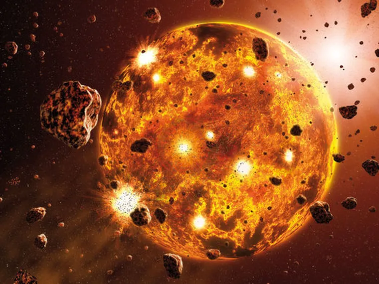
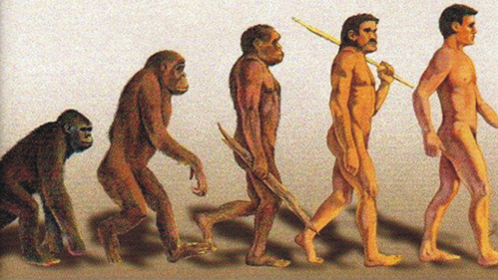
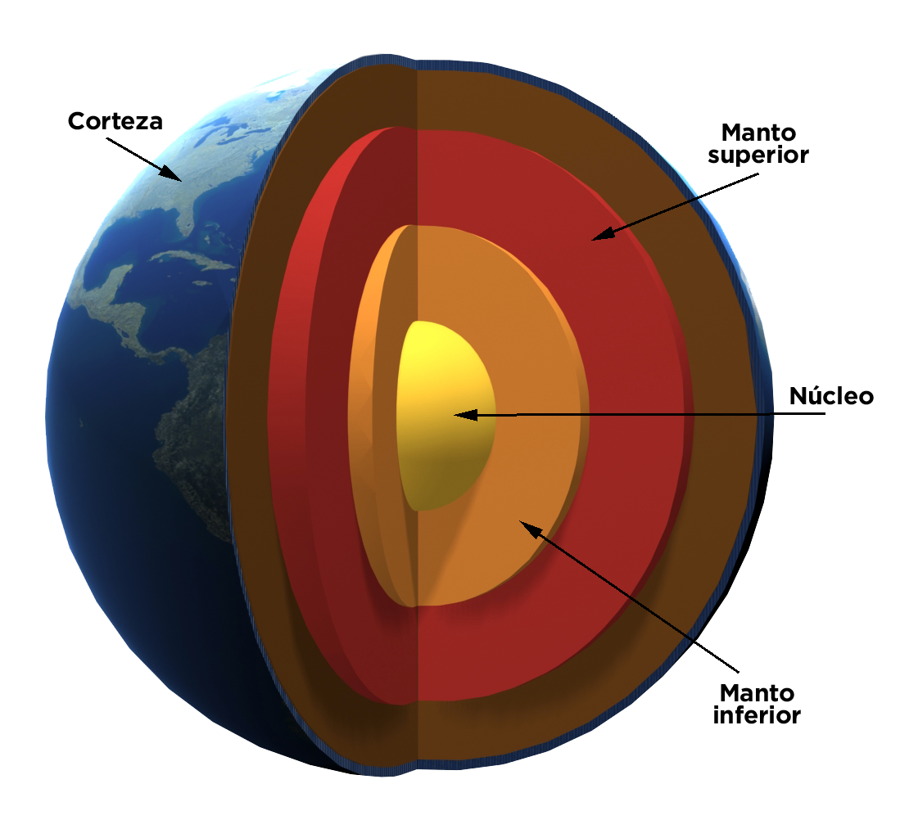

Leer más
Cronología
Los científicos han podido reconstruir información detallada sobre el pasado de la Tierra. Según estos estudios el material más antiguo del sistema solar se formó hace 4567,2 ± 0,6 millones de años
Leer más

Leer Más
Evolución de la vida
La Tierra proporciona el único ejemplo conocido de un entorno que ha dado lugar a la evolución de la vida.
Leer Más

Leer Más
Estructura interna
El interior de la Tierra, al igual que el de los otros planetas terrestres, está dividido en capas según su composición química
Leer Más